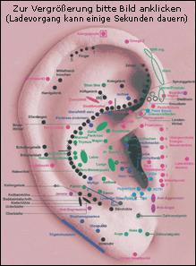
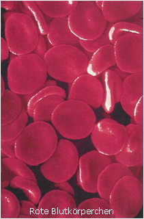

Folgende Therapieverfahren biete ich in meiner Praxis an:
Fertilitätsstörungen Frau / Mann
Doch nicht immer kann der Körper so, wie das Herz es wünscht... Der Körper will damit das Signal senden, dass etwas noch nicht so ist, wie es sein soll, um ein gesundes Kind heranwachsen zu lassen. Mögliche Gründe hierfür können z.B. ein PCO-Syndrom, Endometriose, gestörter Stoffwechsel, Übergewicht, Verschlackung / Übersäuerung im Zwischenzellraum oder ein schlechtes Spermiogramm sein. Oftmals ist aber auch kein schulmedizinischer Grund zu finden, das lang ersehnte Glück bleibt trotzdem unerfüllt.
Durch eine genaue Diagnose (naturheilkundliches Anamnesegespräch, Laboruntersuchungen von Stoffwechsel- und Hormonwerten, die schulmedizinisch und naturheilkundlich ausgewertet werden) wird die Ursache erkannt und ein individueller Therapieplan erstellt.
Je nach Diagnose wird mit homöopatischen und / oder pflanzlichen Mitteln sowie der Ohrakupunktur therapiert. Das Hormonsystem wird nun auf natürlichem Wege reguliert und lernt wieder richtig zu arbeiten.
Es ist selbstverständlich auch möglich eine Insemination (IUI), In-vitro-Fertilisation (IVF) oder Intrazytoplasmatische Spermieninjektion (ICSI) naturheilkundlich vorzubereiten und / oder zu begleiten.
Unsere Darmflora besteht aus Billionen kleinster Lebewesen, den Darmbakterien. Diese positiven Bakterien beschützen unseren Körper vor krankmachenden negativen Bakterien und Pilzen und trainieren unser Immunsystem. Das Gleichgewicht der Bakterienflora kann z.B. durch Antibiotika, Umweltbelastung oder fehlerhafte Ernährung gestört werden. Dadurch vermehren sich die negativen Bakterien und verdrängen die positiven. Das kann zu akuten / chronischen Infekten, akuten / chronischen Magen- und Darmbeschwerden, Hauterkrankungen und Allergien führen.
Durch eine Stuhluntersuchung wird genau festgestellt, welche positiven Bakterien und welche negativen Bakterien / Pilze in welchem Mengenverhältnis im Darm vorhanden sind.
Nun kann eine individuelle Darmsanierung erfolgen, die in 3 Stufen stattfindet:
aus körpereigenem Material
Eine Allergie ist eine Überreaktion des Immunsystems auf einen Allergie auslösenden Stoff. Dies wird auch als "Fehlprogrammierung" des Immunsystems bezeichnet. Damit sich die Reaktionslage wieder normalisieren kann, benötigt das Immunsystem Zeit und Hilfe für die "Neuprogrammierung".
Viele Allergiebehandlungen beginnen erst dann, wenn die Symptome bereits aufgetreten sind und eine Therapie fast nur noch zur "Schadensbegrenzung" / Symptombehandlung dient.
Zeit
Der Herbst (September-November) ist die beste Zeit, um eine effektive Behandlung zu beginnen. Das Immunsystem hat Ruhe vor den Allergieauslösern und genügend Zeit, sich mit Hilfe von speziellen Arzneien ganz der Heilung der Ursache widmen zu können.
Hilfe
Das besondere an dieser Allergiebehandlung ist, dass die Arzneien - die Hilfe für das Immunsystem bringen - überwiegend aus körpereigenem Material hergestellt werden. Der Körper kann diese sofort annehmen - schnell und wirksam umsetzen.
ARZNEIEN
Eigenbluttherapie
Im Blut befindet sich die Information, welche Ursache der Allergie zugrunde liegt. Nicht immer kann das Immunsystem diese erkennen. Wird das Blut homöopathisch aufbereitet oder eine geringe Menge (ca. 1-2 ml) injeziert, ist die Erkennung wesentlich einfacher und das Immunsystem kann die nötigen Maßnahmen ergreifen, um wieder eine normale Reaktionslage herzustellen (siehe Eigenbluttherapie).
Autovaccine
Sie sind eine Art "Eigenimpfstoff", der aus körpereigenen positiven Darmbakterien hergestellt wird und das Immunsystem trainiert und stärkt.
Darmsymbioselenkung
Im Darm befinden sich die positiven Bakterien (auch Darmflora genannt), die maßgeblich daran beteiligt sind, dass unser Immunsystem richtig funktioniert. Ist die Darmflora geschädigt, kann das zu gravierenden Immunsystemstörungen führen. Durch die Stuhlanalyse im Labor, kann das Verhältnis zwischen positiven und negativen Darmbakterien genau ermittelt und die Darmflora gezielt durch die Gabe von positiven Darmbakterien aufgebaut werden (mehr dazu finden Sie unter Darmsanierung).
Je nach Diagnosestellung können zusätzlich
und eine Entsäuerung/Entgiftung die Heilung unterstützen, damit Sie das nächste Frühjahr entspannt und mit Freude genießen können.
Weitere Indikationen:
Der gesamte Körper ist über das Ohr beeinflussbar. Das Skelett, die Organe, das Nervensystem und die Muskulatur finden sich in Form von Akupunkturpunkten am Ohr wieder. Die Ohrakupunktur ist eine schnelle und gezielte Therapie, da die Fehlfunktionen des Körpers auf direktem Weg durch das Gehirn reguliert werden.

Zum Beispiel wird bei einer Schilddrüsenüberfunktion durch das Setzen einer feinen Nadel am entsprechenden Ohrakupunkturpunkt ein Reiz ausgelöst, der zum Gehirn geleitet wird. Hier wird der Reiz verarbeitet und an die Schilddrüse weitergegeben. Dadurch wird die Schilddrüse auf ihre Normalfunktion reguliert.
Bei Störungen im Hormonsystem ist die Ohrakupunktur ebenfalls sehr wirksam. Mit ihr wird regulierend in den Hormonhaushalt eingegriffen.
Auch die Psyche wird positiv beeinflusst. Durch die Stimulierung der entsprechenden Punkte wird eine direkte Ausschüttung von Glückshormonen bewirkt. Zusätzlich werden chinesische Ohrakupunkturpunkte einbezogen, die Endpunkte von Energiebahnen (Meridiane) darstellen. Diese wirken sich positiv auf den Energiehaushalt aus und bringen Entspannung in den Organismus.
Anwendungsbereiche: z.B. Schmerzzustände, Stoffwechselstörungen, Verdauungsbeschwerden, hormonelle Störungen, unerfüllter Kinderwunsch, Atemwegserkrankungen, Schlafstörungen, psychosomatische Störungen, Erkrankung des Bewegungsapparates, depressive Verstimmungen, Raucherentwöhnung.
Stoffwechselprogramm "gesund und aktiv"
"Obwohl ich wenig esse, nehme ich einfach nicht ab. Es muss an meinem Stoffwechsel liegen."
Diesen Satz höre ich oft von übergewichtigen Menschen und sie haben recht! Jeder Mensch hat seinen individuellen Stoffwechsel. Dieser persönliche Stoffwechsel kann anhand der Vital- und Stoffwechselanalyse — aus rund 40 Laborwerten aus dem Blut — genau bestimmt werden. Das Stoffwechselprogramm "gesund & aktiv" ermittelt, welche Nahrungsmittel Ihren Stoffwechsel optimieren. So kann eine eigentlich gesunde Paprika für Sie alles andere als stoffwechselfördernd sein.
Das Ernährungsprogramm "gesund & aktiv" ist eine wissenschaftlich fundierte Maßnahme zur Gewichtsreduktion ohne Jojo-Effekt, Hungern, Medikamente oder Pulvereinnahme. Ein auf Sie zugeschnittenes Ernährungsprogramm, das Ihren Stoffwechsel fördert, dabei gleichzeitig das Hormonsystem harmonisiert und das Immunsystem stärkt, ist der Garant für ein gesteigertes körperliches Wohlbefinden. Das Wunschgewicht wird erreicht und gehalten. Gleichzeitig wird eventuellen späteren Stoffwechselerkrankungen wie z.B. Diabetes, erhöhte Blutfettwerte, Arterienverkalkung, Bluthochdruck vorgebeugt. Zudem können bereits bestehende Erkrankungen geheilt werden.
Eine Fehlfunktion des Immunsystems kann zu chronischen Infekten, Autoimmunerkrankungen und Allergien führen. Durch eine genaue Diagnose (naturheilkundliches Anamnesegespräch) und schulmedizinische Laboruntersuchungen (die schulmedizinisch und naturheilkundlich ausgewertet werden), wird die Ursache erkannt und eine individuelle Therapie erstellt.
FOLGENDE THERAPIEMAßNAHMEN KÖNNEN JE NACH DIAGNOSE UND BESCHWERDEBILD ZUM EINSATZ KOMMEN:
Darmsanierung
Im Darm befinden sich die positiven Bakterien (auch Darmflora genannt), die maßgeblich daran beteiligt sind, dass unser Immunsystem richtig funktioniert. Ist die Darmflora geschädigt, kann das zu gravierenden Immunsystemstörungen führen. Durch die Stuhlanalyse im Labor, kann das Verhältnis zwischen positiven und negativen Darmbakterien genau ermittelt und die Darmflora gezielt durch die Gabe von positiven Darmbakterien aufgebaut werden (mehr dazu finden Sie unter Darmsanierung).
Orthomolekulare Therapie
Durch eine Blutuntersuchung wird festgestellt, welche Vitalstoffe dem Körper für eine optimale Funktion des Immunsystems fehlen. Dementsprechend werden Vitamine, Mineralstoffe, Spurenelemente sowie Aminosäuren und Fettsäuren individuell zugeführt.
Eigenbluttherapie
Im Blut befindet sich die Information, welche Ursache der Fehlfunktion des Immunsystems zugrunde liegt. Nicht immer kann das Immunsystem diese erkennen. Wird das eigene Blut homöopathisch aufbereitet oder eine geringe Menge (ca. 1-2 ml) muskulär injeziert, ist die Erkennung wesentlich einfacher und das Immunsystem kann die nötigen Maßnahmen ergreifen, um wieder eine normale Reaktionslage herzustellen (siehe Eigenbluttherapie).
Autovaccine
Sie sind eine Art "Eigenimpfstoff", der aus körpereigenen positiven Darmbakterien hergestellt wird und das Immunsystem trainiert und stärkt.
Nosoden-Therapie
Chronischen Erkrankungen liegt häufig eine Keimbelastung zugrunde. Nosoden sind homöopathisch verarbeitete Keime (Bakterien, Parasiten, Pilze, Viren, etc.), durch die die Krankheitserreger ausgeleitet werden.
Je nach Diagnosestellung unterstützen die Heilung:
Indikationen:
Der hormonelle Regelkreislauf ist sehr empfindlich, jede Frau reagiert unterschiedlich auf schon kleinste Schwankungen. Deshalb leiden sehr viele Frauen unter zyklusbedingten Beschwerden oder unter den Begleiterscheinungen der Wechseljahre.
Ebenso ist die Grundlage für das weibliche Wohlbefinden eine gesunde Scheidenflora. Diese besteht überwiegend aus Milchsäurebakterien (Lactobazillen), die einen natürlichen Schutz gegen Infektionen darstellen. Ist die Scheidenflora gestört, kann es zu wiederkehrenden Pilzinfektionen, Juckreiz, Ausfluss sowie Harnwegsinfektionen kommen. Eine gestörte Darmflora kann hier auch eine große Rolle spielen.
Durch eine genaue Diagnose wird die Ursache erkannt und eine individuelle Therapie erstellt.
Indikationen:
MIT DER KRAFT DER NATUR
Je reiner und nährstoffhaltiger die Erde, umso besser können Pflanzen in ihr gedeihen. Genauso ist es auch mit unserem Körper. Die Zellen benötigen ebenfalls einen reinen „Nährboden“, um richtig funktionieren zu können - das Zwischenzellgewebe. Dieses verschlackt im Laufe der Jahre, da die Entgiftungsorgane die Gift- und Schlackestoffe (Umweltgifte, Nahrungsmittelzusätze, Säuren, Amalgam) nicht in der Menge ausscheiden können, wie sie dem Körper zugeführt werden. Die sauren Gifte werden im Zwischenzellgewebe eingelagert.
Durch das Zwischenzellgewebe müssen jedoch Nährstoffe, Sauerstoff, Hormone sowie Informationen vom Hirn an die Zellen weitergeleitet werden. Durch die Verschlackung ist das nicht mehr ausreichend möglich. Die Zellen werden unterversorgt - dadurch werden sie träge. Die Organe können nicht mehr richtig arbeiten - Krankheiten entstehen.
Durch die Gabe von homöopathischen und pflanzlichen Mitteln, einer gesunden Ernährung und ausreichender Flüssigkeitszufuhr, werden die sauren Gifte aus dem Zwischenzellgewebe gelöst. Gleichzeitig werden die Entgiftungsorgane angeregt und gestärkt, so dass die ungesunden Stoffe ausgeschieden werden können. Die Körperzellen entfalten wieder ihre volle Leistungskraft.
Diese Therapie ist sinnvoll bei:
 Das Blut transportiert in unserem Körper alle lebenswichtigen Stoffe wie z.B. Sauerstoff und Nährstoffe. Neben den vielen wichtigen Bestandteilen transportiert es aber auch Toxine und Bakterien. Diese können mit dem Blut an jede Stelle unseres Körpers gelangen und z.B. zu akuten / chronischen Entzündungen (Infekten) führen.
Oftmals ist die körpereigene Abwehr blockiert oder geschwächt. Dadurch werden die Bakterien nicht als „Feind“ erkannt und können den Körper schädigen. Dem Patienten wird in diesem Zustand eine kleine Menge Blut abgenommen (ca. 1-2 ml), je nach Diagnosestellung mit einem homöopathischen Mittel angereichert und in den Gesäßmuskel injiziert. Die körpereigene Abwehr erkennt nicht, dass es sich um das eigene Blut handelt. Es untersucht diesen "Fremdstoff" nun ganz genau. Erst jetzt erkennt das Immunsystem die krankmachenden Erreger. Es nimmt diesen Reiz als Information eines neuen Infektes auf. Durch die erneute Aktivierung und mit der Unterstützung des homöopathischen Mittels, entwickelt das Immunsystem nun spezielle Antikörper gegen die Bakterien.
Eine weitere Form der Eigenblut-Therapie ist die Gabe in Tropfenform. Das Blut wird homöopathisch aufbereitet und oral eingenommen. Welche Form der Eigenblutbehandlung für den Patienten am sinnvollsten ist, richtet sich je nach Diagnosestellung.
Da die Eigenblut-Therapie zu der Gruppe der Reiz- und Umstimmungsverfahren zählt, hat sie sich besonders bewährt bei:
Die weißen Blutkörperchen, die uns vor Krankheiten schützen, indem sie Erreger erkennen und vernichten, benötigen zur Entfaltung ihrer vollen Leistungskraft einen bestimmten Anteil an Vitamin C. Ist dies in der Zelle nicht ausreichend vorhanden, wird die Abwehrfunktion erheblich eingeschränkt. Die Folgen sind virale und bakterielle Infekte.
Durch die Gabe hochdosierter Vitamin C-Infusionen werden die weißen Blutkörperchen gestärkt und sind wieder voll leistungsfähig.
Vitamin C ist auch ein Schutz gegen Tumorbildung im gesamten Verdauungsapparat, weil es die Umwandlung von Nitrat (das wir ständig mit der Nahrung aufnehmen) in karzinogene Stoffe verhindert. Krebspatienten weisen stets einen deutlichen Mangel an Vitamin C auf.
Vitamin C aktiviert den Cholesterinabbau in der Leber und senkt den Cholesterinspiegel im Blut. Es erhöht den HDL Wert (gutes Cholesterin) und senkt den LDL Wert (schlechtes Cholesterin). Dadurch wird das Arterioskleroserisiko gesenkt und Herz-, Kreislauf- und Gefäßerkrankungen vorgebeugt.
Vitamin C wirkt entzündungshemmend und ist ein Radikalfänger. Deshalb eignet es sich auch hervorragend zur Therapie von Rheuma und Arthrose. Durch das Injizieren homöopathischer Mittel an die betreffenden Gelenke (Neuraltherapie) wird der positive Effekt noch verstärkt.